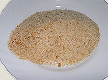

Strouhanka se vyrábí strouháním či mletím suchého neochuceného pečiva, zejména rohlíků a housek. V kombinaci s moukou a rozšlehanými vejci tvoří trojobal, který slouží jako obalovací prostředek pro smažení masa, zeleniny, sýra a jiných pokrmů. Orestovaná strouhanka se přidává k pokrmům z chřestu. Ze strouhankového těsta lze připravovat smaženky.
